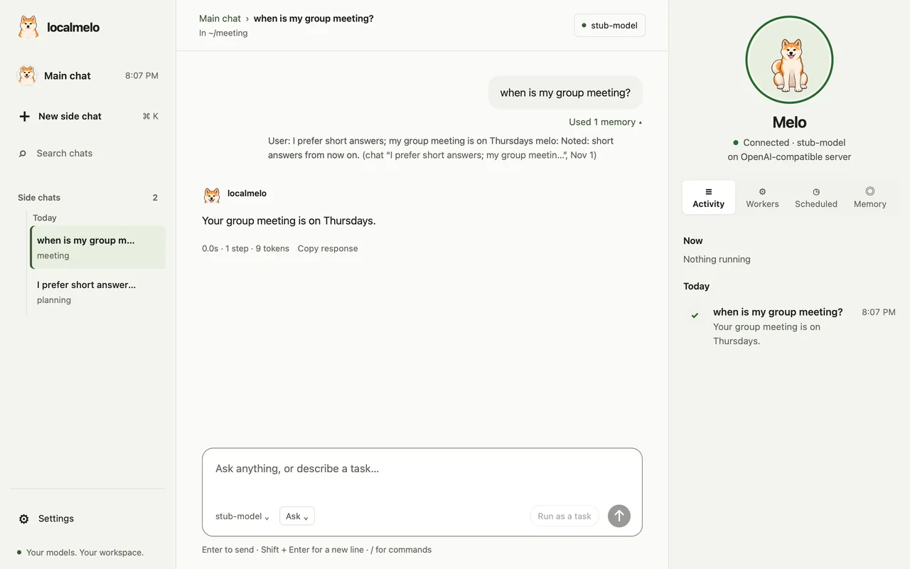

记忆设计
维护者撰写的记忆设计，按原样保留；其中部分内容尚未实现。

组件
在原先的架构页上，整体架构图展示了这些组件；点击其中一个，会打开一个面板，显示下面的内容。那一页的介绍部分写道：
Track 2 进一步把在线 working context 和 Hippo 的 durable memory routing 拆开，让 agent loop、memory、checker、executor 可以独立于具体模型服务演进。
这张图展示 online path 从用户入口到最终回答的主要流向，也标出 checker 边界、provider/backend seam，以及后续 sleep pipeline 的离线路径。Memory 节点采用 Track 2 语义：working 负责 active session context，Hippo 负责 durable/specialized routing。
Agent / Planner
它的面板里，循环阶段（Loop stages）列表的最后一项：
- 只做轻量 bool 判断：candidate 是否值得记忆。
Memory
Track 2 memory session：working 和 Hippo 两条并行分支
Session split
working是 agent-facing active cache，使用两阶段 LRU-style refresh：freshmemories 只有被复用后才提升为rehearsed。- 只有
rehearsedworking memories 才能成为 long-term promotion candidates；freshmemories 不应直接持久化。 Hippo负责把 durable 和 specialized writes 路由到 long/profile、tools 和 personalized samples。history是 raw append-only record/debug layer，不参与 normal recall。- Hippo v1 使用
NEW、UPDATE、RELATED、CONFLICT和IGNORE，替代单一 vector threshold。
关键文件
melo/memory/coordinator.pymelo/memory/hippo/hippo.pymelo/memory/hippo/hippo_policy.pymelo/memory/short/melo/memory/history/sqlite.pymelo/memory/long/sqlite.pymelo/memory/personalized/melo/memory/tools/
在整体架构图中
- 标签
- working + Hippo branches
history stays raw - 连线
- Agent / Planner ↔ Memory: plan + recall
- Providers → Memory: embed
Sleep
计划中的 offline personalization pipeline
Sleep mode 保持 offline。Track 2 已定义它后续消费的边界：PersonalizedMemory 接收 filtered samples，而不是 raw history dumps。
关键文件
melo/sleep/preprocess/melo/sleep/training/melo/sleep/evaluation/melo/sleep/state/
在整体架构图中
- 标签
- future personalization
- 说明
- planned offline workflow
preprocessing / training / evaluation / promotion - 连线
- Sleep → Memory: consolidation
- Sleep → Providers: future training
Track 2 / Memory Session
Memory 子图
当 agent 判断 candidate 值得记忆时，v1 中 agent-side decision 保持为 bool；同一份 candidate 并行发送给 working 和 Hippo。前者维护 active context，后者决定 durable 或 specialized placement。long-term writes 需要等待相关 working memory 进入 rehearsed 状态，或出现其他 strong write signal。
online session
- agent Remembered candidate bool=true proposal，不是 storage decision
-
- working Working memory 短期 active cache；LRU-style refresh；只有 rehearsed memory 才能成为 long-term candidate
- hippo Hippo router 选择 NEW、UPDATE、RELATED、CONFLICT 或 IGNORE；long-term writes 等待 rehearsal
- promotion gate: fresh -> rehearsed 后才能 long-term persistence
durable and specialized memory
- Long / Profile v1 使用一个 physical long store；用 semantic、episodic、profile、reflection metadata kinds 区分
- Tools authoritative registry 加 procedural skill/template memory；不绕过 checker
- Personalized Track 4 使用的 filtered sleep samples，不接收 raw history dump
- History append-only task / step records，只用于 debugging、audit、replay 和 provenance
Working branch
重复使用的 active memory 会被 touch 或 compact，让当前任务上下文保持 bounded 且更新；只有 rehearsed memory 才能成为 long-term candidate。
Hippo branch
Hippo 负责 classification、metadata、provenance、relation links、conflict handling，以及立即写入还是 defer 到 sleep。
Extensible shape
同样的 subgraph 结构可以继续扩展到 agent、executor 和 sleep 细图，而不把这些 concern 塞进 memory session view。
需要保持的边界
架构页原先的边界表中与记忆有关的两行。
| 边界 | 规则 | 原因 |
|---|---|---|
| Agent 到 Memory | Agent 只提出 remembered candidate；经过 checker 限制后，working memory 和 Hippo 并行接收。 | Agent 不依赖 SQLite、vector search、profile tables、tool memory internals 或 sleep samples。 |
| History 到 PersonalizedMemory | PersonalizedMemory 只接收 selected sleep samples；不应直接 ingest raw history。 |
Track 4 得到 curated training inputs，不把 audit log 默认变成在线召回或训练数据。 |
实现状态
架构页原先的实现状态一节中的 Memory system 和 Sleep pipeline 两张卡片。它们描述的是截至 2026-05-03 的设计状态，而不是代码现在的行为。
Memory system
Track 2 已把 working memory 和 Hippo 定义为并行分支；五类 action 的 Hippo controller、metadata-typed profile memory、procedural tool memory 和 selected sleep samples 是当前设计方向。
Sleep pipeline
Training / evaluation 目前仍是 scaffold。下一步应该先写 design issue，而不是直接实现。
Track 2 交付物
这张表原先在更新页上，状态截至 2026-05-10。
| 交付物 | 状态 |
|---|---|
| 文档化 memory env vars、file layout、retention semantics 和 reset workflow。 | v1 done |
| 添加 multi-session SQLite stress coverage。 | v1 done |
| 针对 OMLX、Ollama 和 MLC-LLM 运行并记录 real-backend long-term retrieval smoke。 | archived |
冻结并文档化 PersonalizedMemory selected-sample schema for v1。 | v1 done |
实现 working-memory fresh / rehearsed stages。 | next |
| 实现 Hippo five-action routing 和 metadata-typed long/profile memory。 | next |